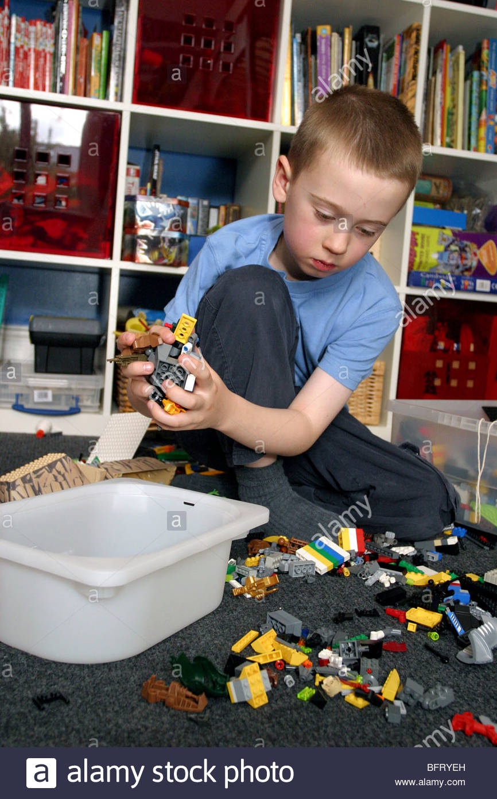
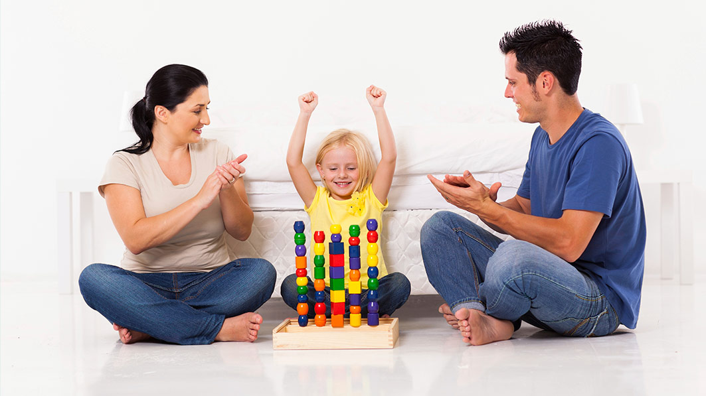

KỸ NĂNG SẮP XẾP ĐỒ DÙNG
Dọn dẹp nhà cửa, sắp xếp đồ đạc ngăn nắp, gọn gàng, khoa học là một kỹ năng sống cần thiết cho trẻ mà cha mẹ cần lưu tâm. Điều này không chỉ đơn thuần do lười biếng hay không có kỹ năng dọn dẹp, sắp xếp đồ đạc sao cho hợp lý, thuận tiện sử dụng nhất mà điều chúng ta cần quan tâm đó là “Gọn gàng, ngăn nắp là thói quen cần xây dựng từ nhỏ”. Vậy cha mẹ cần làm gì để giúp con biết gọn gàng, ngăn nắp ngay từ nhỏ? 1. Hãy ra yêu cầu với con Cha mẹ hãy làm cho con hiểu ngăn nắp, gọn gàng là môt kỹ năng sống cần thiết cho trẻ. Yêu cầu con phải tự dọn dẹp đồ chơi, quần áo và sắp xếp mọi thứ trong phòng của con ngay lập tức, nếu bạn thật sự muốn con làm điều này. Bạn không cần nghĩ rằng con còn quá nhỏ hay còn cần thời gian để làm quen. Nếu từ lúc 2 tuổi bạn đã cho con “giúp đỡ” vài việc linh tinh, 3 tuổi đã cho con tự chọn đồ để mặc… thì việc bắt đầu cho con tự dọn phòng vào lúc 5 tuổi là hoàn toàn bình thường. Điều đầu tiên con cần hiểu, con không phải đang dọn dẹp giúp ba mẹ mà con đang làm việc của chính mình. 2. Hãy thương lượng khi cần thiết Những lần dọn dẹp đầu tiên, ba mẹ nên giúp đỡ con. Đầu tiên hãy giảm bớt khối lượng công việc của con bằng cách cùng con lựa chọn các đồ đạc cần thiết và loại bỏ những đồ đạc không cần thiết trong phòng. Mẹ có thể thấy những con thú bông quá nhiều, những món đồ chơi đã cũ, hỏng cần bỏ đi nhưng con chưa hẳn đã nghĩ đến điều đó. Hãy thương lượng với con về chuyện bỏ bớt đồ và cho con quyền quyết định sẽ giữ lại những món nào. 3. Hướng dẫn cách sắp xếp Những đồ cần thiết và thường dùng con sẽ để ở những ngăn thấp trong tầm với còn những món ít dùng đến sẽ để trên ngăn cao. Ngoài ra những món đồ mà ba mẹ cho rằng con cần được giám sát khi động vào cũng nên ở trên cao, xa hơn tầm với của con để đảm bảo an toàn.  4. Ba mẹ hãy là tấm gương để con làm theo Tất cả các kỹ năng khác cũng vậy, bạn chỉ dạy được con mình khi bản thân gương mẫu.Thay vì việc bắt con ngồi nghe mình giảng giải hàng giờ thì bạn hãy hành động, hãy làm mẫu và tốt hơn hết là cùng con làm. Đó chính là cách tốt nhất để con ghi nhớ và làm theo. 5. Dọn dẹp và từ thiện Để con hiểu hơn gọn gàng ngăn nắp là một kỹ năng sống cần thiết cho trẻ, thay vì việc bắt ép con phải dọn dẹp phòng mỗi ngày, ba mẹ hãy để cho con được làm chủ căn phòng của chính mình. Khi con có ý thức trách nhiệm với căn phòng của riêng mình, dọn dẹp cũng là một cách thể hiện quyền sở hữu mà những cô bé cậu bé rất hào hứng. 6. Khen ngợi Ba mẹ hãy khen ngợi con sau những cố gắng mà con đã làm được. Đó là điều vô cùng cần thiết để con có thêm động lực hình thành những thói quen khác.  Ngoài ra, cha mẹ có thể cho con tham gia các khóa học kỹ năng sống hay các khóa hè bán trú để con được rèn luyện tính gọn gàng ngăn nắp đúng cách nhất ngay từ nhỏ.